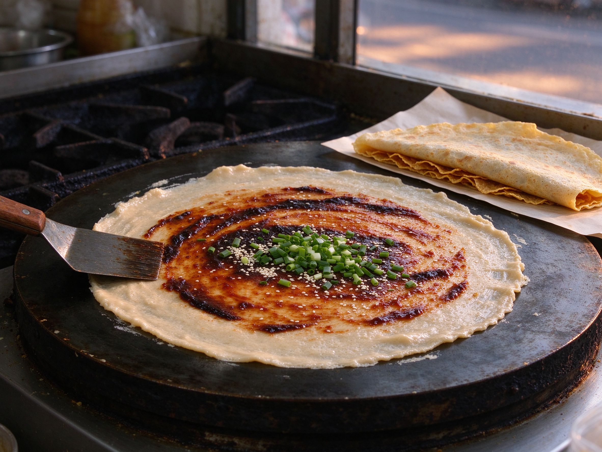

Jianbing: The Chinese Breakfast Crepe You Can Make in a Frying Pan
Walk any Chinese city street before eight in the morning and you'll find a line at a round iron griddle. The cook spreads a ladle of batter paper-thin, cracks an egg on top, brushes on sauce, folds in a crisp cracker, and hands it over in ninety seconds. Jianbing is that breakfast — and with the right batter and one nonstick pan, it's a five-minute weekend project rather than a mystery.
What Goes Into a Jianbing
Four components, each with a job:
- The wrapper — a thin batter, traditionally mung bean flour plus wheat flour. Mung bean brings a faint green-bean flavor and a slightly nutty edge; all-wheat works but tastes more like a plain crepe.
- The egg — cracked directly onto the half-set wrapper and spread over it. It becomes the structural layer that holds everything.
- The sauce — a brush of sweet bean paste blended with hoisin and chili oil. This is the entire flavor identity; get it right and the rest is easy.
- The crunch — a fried crisp (baocui) or a length of fried dough stick. Without something crisp inside, you've made a soft omelette, not a jianbing.
The Batter
- 60 g mung bean flour
- 60 g all-purpose flour
- 250–280 ml cold water
- A pinch of salt
Whisk to a smooth, runny batter with no lumps, then rest 15 minutes so the flours hydrate. Resting matters: un-rested batter tears when spread thin. This makes about four jianbing.
The Sauce
- 2 tbsp sweet bean paste (or hoisin if you can't find it)
- 1 tbsp hoisin sauce
- 1–2 tsp chili oil, or chili crisp with some of its oil
- 1 tsp sesame oil
- 1–2 tbsp water to loosen
Whisk to a brushable consistency. Too thick and it drags on the wrapper; too thin and it soaks in and disappears.
The Crisp
Cut spring roll wrappers or wonton wrappers into rough rectangles and fry them in 170 °C oil until blistered and golden — about 20 seconds. They keep several days in a sealed jar, so fry a batch and you can make jianbing all week. A split fried dough stick works too, but it's softer and less satisfying.
Method
- Heat a nonstick or well-seasoned flat pan over medium heat until a drop of water sizzles and vanishes. Lightly oil, then wipe out the excess with a paper towel — a wet, oily pan makes the batter slide and clump.
- Pour about 60 ml batter into the center. Immediately spread it outward in a spiral with a thin scraper, an offset spatula, or the back of a ladle, working fast while the batter is still fluid.
- When the surface turns from glossy to matte (about 30–45 seconds), crack an egg on top and spread it over the whole wrapper with the same tool. Scatter scallions and sesame seeds into the egg.
- Let the egg set for 30–45 seconds, then flip the whole thing in one confident motion.
- Brush the now-egg-free side generously with sauce, lay a crisp along one edge, and fold: bottom third up, top third down, then fold in half. Or roll it like a burrito, which is how most vendors hand it over.
- Slide onto a board, cut in half, and eat immediately — jianbing goes soft fast.
Troubleshooting
- Batter won't spread, tears, or bunches up: too thick, or the pan is too hot. Take the pan off the heat for 20 seconds, thin the batter, and try again.
- Sticks to the pan: the pan wasn't hot enough when the batter went in, or the nonstick coating is worn. Preheat longer and use a little more oil.
- Wrapper too thick and bready: you used too much batter. Sixty milliliters is the whole point — thin enough to see the pan through it.
- Tastes flat: the sauce is the flavor. Most home versions under-sauce; brush more than feels reasonable.
Variations
- Add lettuce and cilantro for freshness — common in southern versions.
- Swap the crisp for shredded cabbage dressed with vinegar for something lighter.
- Make it meaty with sliced char siu or a little shredded braised pork tucked inside before folding.
- Vegetarian — skip the egg, double the sauce, and add fried tofu strips; see plant-based Chinese cooking.
Jianbing is the rare street food that translates perfectly to a home kitchen: one pan, one batter, one sauce, and no equipment you don't already own. Make the batter tonight, fry the crisps, and tomorrow you'll have breakfast in five minutes.